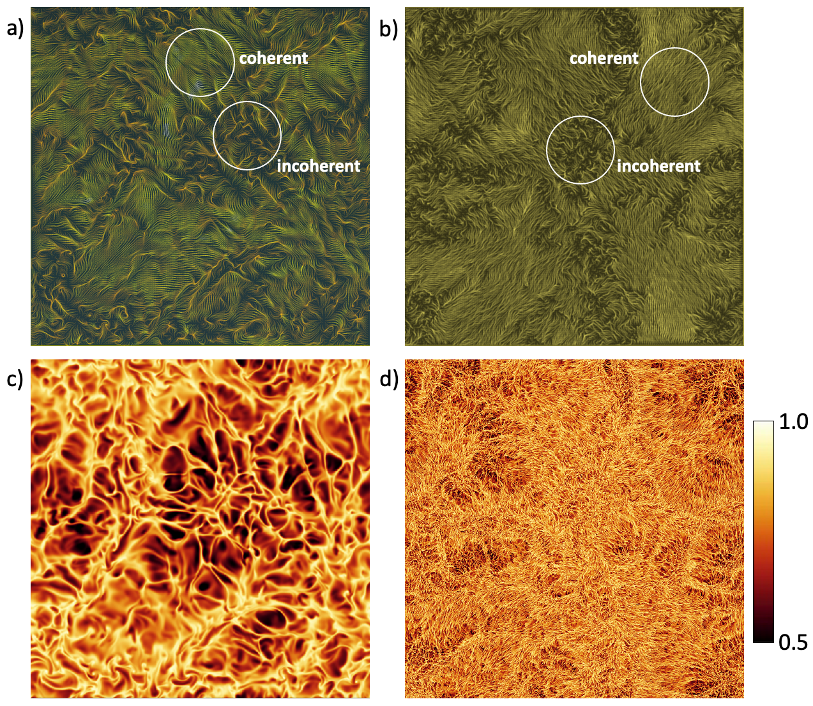
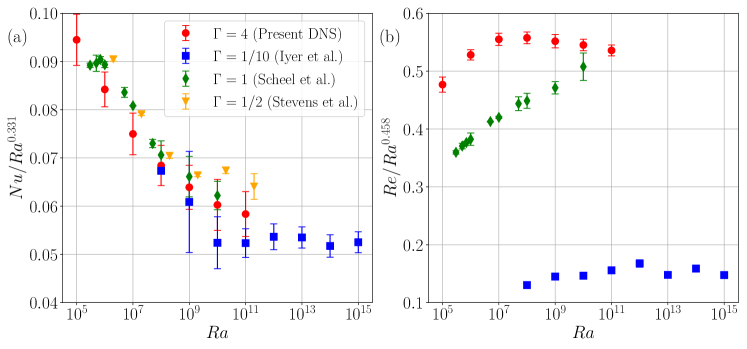
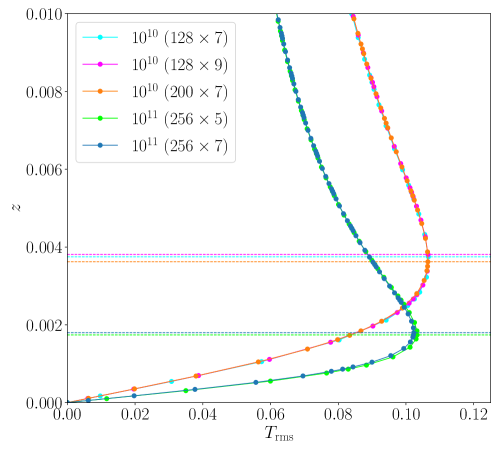
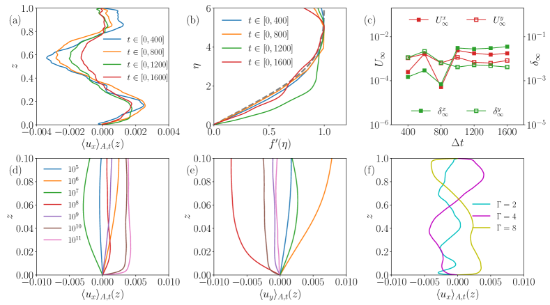
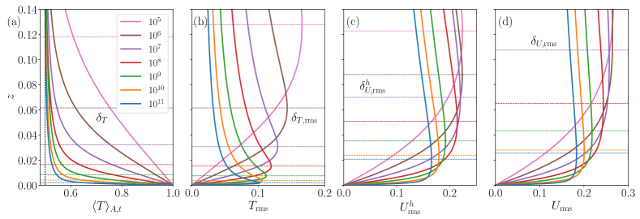
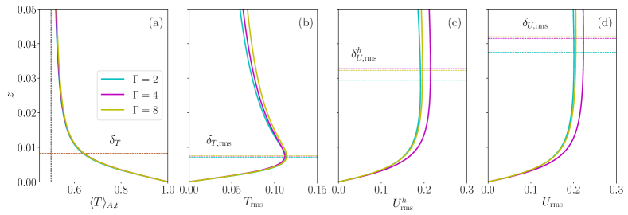
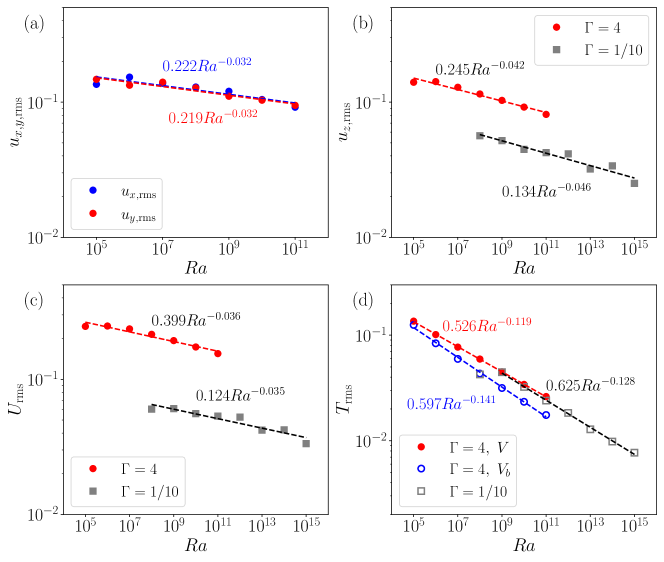
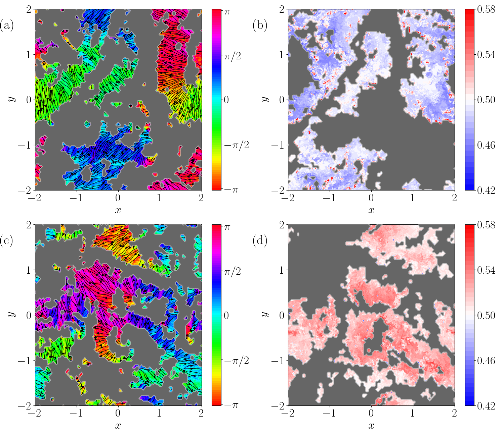
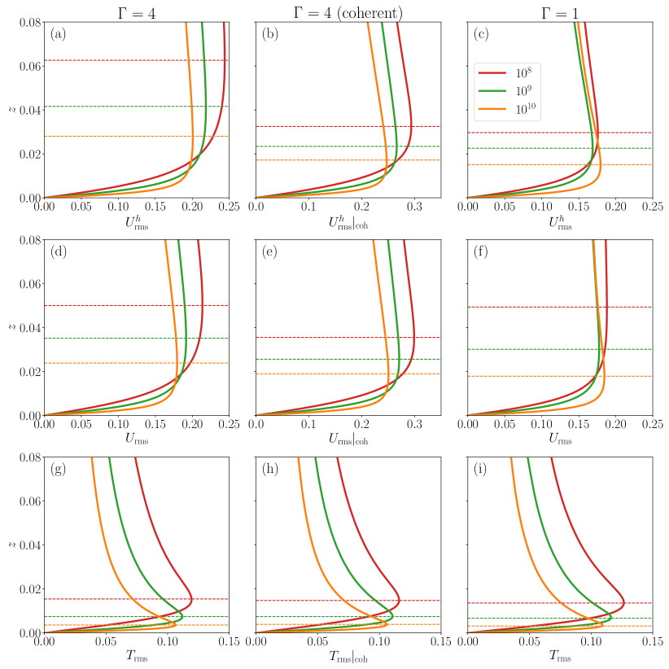
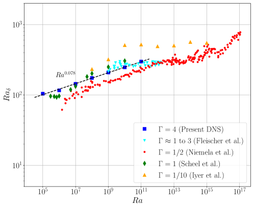

انعدام سرعة متوسطة مستدامة في المنطقة الحدية للحمل الحراري المستوي
الملخص
ندرس ديناميات المنطقتين الحديتين الحرارية والزخمية في محاكاة عددية مباشرة ثلاثية الأبعاد لحمل رايلي-بينار ضمن مدى أعداد رايلي و. وباستخدام لوح ديكارتي ذي شروط حدية دورية أفقية ونسبة باع قدرها 4، نحصل على تجانس إحصائي في الاتجاهين الأفقيين و، وبذلك نقرّب على أفضل وجه طبقة حمل ممتدة ذات صلة بمعظم تطبيقات الجريان الجيوفيزيائية والفيزيائية الفلكية. نلاحظ، عند الاستخدام المعياري لمتوسطات طويلة زمنياً ومكانية على المساحة معاً، وبفترات متوسط لا تقل عن 100 من أزمنة السقوط الحر، أن جرياناً متوسطاً متماسكاً عالمياً غائب عملياً، وأن مقدار تقلبات السرعة أكبر من المتوسط بما يصل إلى 2 رتب قدرية. حقل السرعة قرب الجدار هو مجموعة من رقع جريان محلية متباينة الاتجاه تهيمن عليها القصوص، تتخللها مناطق واسعة غير متماسكة وخالية من القص يمكن أن تبلغ في كبرها المقطع العرضي كله، بخلاف ما يحدث في خلية حمل أسطوانية مغلقة ذات نسبة باع من رتبة 1. وتشغل المناطق غير المتماسكة كسراً مساحياً قدره 60% لجميع أعداد رايلي المدروسة هنا. وعوضاً عن أن يفضي حقل السرعة إلى جريان متوسط بارز مع تقلبات صغيرة حول ذلك المتوسط، كما يوجد في الحمل ذي نسبة الباع الصغيرة، تهيمن عليه تقلبات قوية في مركباته الثلاث كلها حول متوسط معدوم أو ضعيف. ونناقش تبعات هذه الملاحظات لطبقات الحمل ذات نسب الباع الأكبر، بما في ذلك لااستقراريات الطبقة الحدية وانتقال الحرارة المضطرب الناتج عنها.
keywords:
حمل رايلي-بينار، الطبقات الحدية1 مقدمة
يُعد حمل رايلي-بينار (RBC) أحد التشكيلات الأساسية للجريان في بحوث اضطراب الموائع. ففي هذا التشكيل يُفترض اسمياً أن المائع محصور في طبقة ممتدة إلى ما لا نهاية بين صفيحتين متوازيتين أفقيتين وغير منفذتين، تفصل بينهما مسافة رأسية (Rayleigh, 1916). وعندما تُسخَّن طبقة المائع من الأسفل بقوة كافية (وتُبرَّد من الأعلى)، تُطلِق قوى الطفو حركة مائعة مضطربة لها حالة مفضلة إحصائياً بالنسبة إلى اتجاه الجاذبية، . وتتعلق مسألة مركزية بمقدار وطبيعة الحرارة والزخم المنقولين عبر الطبقة، وباعتمادهما على فرق درجة الحرارة المفروض بين الصفيحتين العلوية والسفلية، . ويُعبَّر عن فرق درجة الحرارة بعدد رايلي اللابعدي ، حيث إن هو معامل التمدد متساوي الضغط، و اللزوجة الحركية، و الانتشارية الحرارية (Ahlers et al., 2009b; Chillà & Schumacher, 2012; Verma, 2018).
وتتمثل مسألة مهمة ثانية في بنية الطبقات الحدية للسرعة والحرارة على الجدران الأفقية، وفي آثارها في انتقال الحرارة. وبما أن نظام RBC محاط بجدران عند الأعلى والأسفل، فإن الطبقات الحدية اللزجة والحرارية المتشكلة على هذه الجدران تضع عنق زجاجة أمام النقل الكلي لكل من الحرارة والزخم. ولا تزال تركيبتها ودينامياتها عند أعداد رايلي العالية جداً بحاجة إلى فهم أفضل، كما جرى التأكيد مؤخراً (Iyer et al., 2020; Lindborg, 2023; Shishkina & Lohse, 2023; Creyssels & Martinard, 2024). وبالنسبة إلى أعداد رايلي ، لم تحل أي تجربة مخبرية حتى الآن التفاعلَ الديناميكي للطبقات الحدية وتقلباتها مع العناصر البنيوية الأساسية، أي الأعمدة الحرارية وطبقات القص. ومن ثم فإن المحاكاة العددية المباشرة (DNS) هي السبيل الوحيد لمقارنة بنيتها وخصائصها الإحصائية بتنبؤات النظريات الخاصة بالطبقات الحدية الصفائحية والمضطربة المعيارية (Schlichting & Gersten, 2016). وفضلاً عن ذلك، فإن هندسة الخلية المغلقة في دراسات أعداد رايلي العالية (Castaing et al., 1989; Chavanne et al., 1997; Niemela et al., 2000; Ahlers et al., 2009a; Urban et al., 2012) تكسر تناظر الانتقال الأفقي للإحصاءات، إلا ربما عندما تكون نسبة الباع كبيرة جداً (Pandey et al., 2018). وتفرض نسبة الباع الصغيرة دوراناً واسع النطاق سائداً (LSC) في الخلية (Kadanoff, 2001)، يظهر في صورة جريان قص متماسك نسبياً يصل بين الصفيحتين العلوية والسفلية، ولا يتقلب إلا باعتدال في اتجاهه المتوسط (Sreenivasan et al., 2002; Stevens et al., 2011; Shi et al., 2012; Scheel & Schumacher, 2017). ويُبعدنا كلا الجانبين عن السؤال الأصلي المتعلق بانتقال الحرارة والزخم في طبقة مستوية الممتدة إلى ما لا نهاية.
في هذا العمل، نركز بدرجة أكبر على المسألة الثانية في تشكيل هو الأقرب إلى نموذج RBC الأصلي للحمل بين زوج من المستويات الممتدة إلى ما لا نهاية، وذلك باستخدام حدود دورية في كلا الاتجاهين الأفقيين. وقد أُجريت محاكيات ذات شروط حدية وأعداد برانتل مشابهة بواسطة Kerr (1996) من أجل و، وبواسطة Hartlep et al. (2003) من أجل و، وبواسطة van Reeuwijk et al. (2008a) وvan Reeuwijk et al. (2008b) من أجل و، وبواسطة De et al. (2018) من أجل ولكن ، وبواسطة Stevens et al. (2018) من أجل عند . وتمتد محاكياتنا العددية المباشرة على أعداد رايلي تغطي ست رتب قدرية وصولاً إلى ولفترات زمنية طويلة (انظر الجدول 1 للتفاصيل). ويوفر اختيار نسبة باع قدرها 4 في الدراسة الحالية موضعاً وسطاً ملائماً. فمن ناحية، يكون المجال كبيراً بما يكفي كي لا يولد دورانات واسعة النطاق قوية، انظر Niemela & Sreenivasan (2006). ومن ناحية أخرى، يكون صغيراً بما يكفي ليتيح لنا بلوغ أعداد رايلي عالية جداً، تصل هنا إلى ، لأن الموارد العددية المطلوبة تنمو مع . وفضلاً عن ذلك، فهذه هي نسبة الباع التي بعدها تصبح أعداد نوسلت ورينولدز مستقلة عن كما نوقش في Stevens et al. (2018). ونكمل هذه النتائج بتشغيلات DNS إضافية عند و8 من أجل .
يكشف تحليل معياري للجريان المتوسط عن غياب شبه تام لجريان متوسط عالمي؛ وبدلاً من ذلك، تهيمن تقلبات سرعة قوية على الجريان عند جميع . وتؤدي ملاءمات مقاطع السرعة الرأسية المتوسطة إلى سرعات تيار حر صغيرة جداً بدلالة سرعة السقوط الحر ، وإلى سماكات بدلالة ، مما ينتج أعداد رينولدز قصية صغيرة –10 حتى عند أكبر . ونحلل كذلك تقلبات مركبات السرعة، ونحدد مسافات القيم العظمى للتقلبات مربعة المتوسط من الجدار، ونناقش أعداد رينولدز الناتجة.

يمكن استمداد انطباع سريع عن ديناميات الطبقة الحدية المعقدة من مخططات خطوط الانسياب والكنتور في الشكل 1 قرب الجدار السفلي لعددين من أعداد رايلي. وتشير الأشكال إلى ترقع بارز في طبقة السرعة الحدية كلها عند النظر إليها من الأعلى. وتتكون الطبقة الحدية من مناطق متماسكة تهيمن عليها القصوص وأخرى غير متماسكة خالية من القص. وتصبح هذه السمة أقل بروزاً في كنتورات حقل درجة الحرارة، التي تعرض هيكلاً متزايد الكثافة من حواف الأعمدة الحرارية على كامل الصفيحة. وهنا نكمّي الكسر المساحي المقابل، ونشترط التقلبات على المناطق المتماسكة وغير المتماسكة، ونربط المناطق غير المتماسكة بالأنماط واسعة النطاق في الجسم الداخلي، وهي البنى الفائقة المضطربة للحمل (Pandey et al., 2018; Stevens et al., 2018). ولا تكون المقاطع المتوسطة قريبة من تلك المرصودة في أسطوانات مغلقة عند إلا عندما تُشترط تقلبات السرعة على المناطق المتماسكة التي تهيمن عليها القصوص (Scheel & Schumacher (2017).
ينبغي تأكيد نقطة مهمة هنا. فمع أن طبقة حدية حرارية من النمط القياسي موجودة بالفعل، لا يمكن تحديد طبقة حدية للزخم بسهولة، كما سيُشرح لاحقاً. ولذلك، فمن الأدق بالنسبة إلى حقل السرعة أن نناقش مجرد الجريان قرب الجدار بدلاً من جريان الطبقة الحدية؛ لكننا، لسهولة التعريف واتباعاً للاصطلاح، نواصل استخدام مصطلح الطبقة الحدية. ولا يوجد مثل هذا اللبس بالنسبة إلى الطبقة الحدية الحرارية.
2 المحاكيات العددية وتحليل الدقة
نحل معادلات بوسينسك الثلاثية الأبعاد الخاصة بـ RBC (Verma, 2018) باستخدام شيفرة العناصر الطيفية المعتمدة على وحدات معالجة الرسوميات nekRS (Fischer et al., 2022)، وهي تجمع تفكيك مجال الحساب إلى عناصر مع توسيع طيفي لكل حقل معني في كثيرات حدود لاغرانج على امتداد كل بعد مكاني داخل كل عنصر. وتُعطى المعادلات في صيغة لابعدية كما يلي
| (1) | ||||
| (2) | ||||
| (3) |
هنا، تمثل و و حقول السرعة والضغط ودرجة الحرارة، على التوالي. ويُعبَّر عن الطول والسرعة ودرجة الحرارة بوحدات و وفرق درجة الحرارة الخارجي ، على التوالي. وتُطبّق شروط عدم الانزلاق الحدية لحقل السرعة عند الصفيحتين في و. ويلخص الجدول 1 عدد 10 من المحاكيات، كلها عند عدد برانتل ونسب باع و4 و8، حيث إن هو الطول الأفقي. ويكون عدد نقاط التجميع داخل الطبقة الحدية الحرارية (استناداً إلى مقاطع تقلبات درجة الحرارة) دائماً . وفضلاً عن ذلك، تحققنا من أن عددي نوسلت و، اللذين يُعطيهما متوسط حجمي-زمني مشترك ومتوسط مساحي-زمني ،
| (4) |
ينتجان عملياً القيم نفسها (الجدول 1).
كنتيجة كلية أولى، نعرض في الشكل 2(a,b) عددي نوسلت ورينولدز، و، بدلالة عدد رايلي ، بعد تعويضهما بنتيجة القياس عند العالية لـ Iyer et al. (2020)؛ وهنا . كما تُقارَن نتائجنا بنتائج Stevens et al. (2010) وScheel & Schumacher (2017) في أسطوانات مغلقة عند و، على التوالي. ومع النظر إلى الفروق الكبيرة في نسب الباع، فإن أعداد نوسلت تتطابق بصورة جيدة إلى حد معقول وتتبع الاتجاه نفسه من أجل (الشكل 2(a))؛ وهي متوافقة أيضاً مع محاكيات سابقة من أجل من van Reeuwijk et al. (2008a). ويُظهر عدد رينولدز اعتماداً قوياً على الهندسة كما يتضح في الشكل 2(b)، غير أنه يميل إلى الأس نفسه باتجاه العالية؛ وهذا يوحي باتفاق في أسس القياس عند العالية، لكن العامل المسبق يبدو ذا اعتماد معقد على عدد رايلي. وتُستخلص الإحصاءات في جميع التشغيلات لمدة تساوي أو تزيد على 100 من أزمنة السقوط الحر ؛ انظر الجدول 1.
تحققنا من أن دقة حل الطبقات الحدية كافية. يبين الشكل 3 المقاطع الرأسية لتقلبات درجة الحرارة لثلاث شبكات عناصر طيفية مختلفة عند ولشبكتين عند مع رتب حدودية متعددة مختلفة . ويتضح أن المقاطع تتطابق جيداً بعضها مع بعض، مما يبرهن أيضاً على تقارب الطريقة الطيفية. ويُعزز هذا الاستنتاج أكثر من أجل حيث لدينا 4 تشغيلات DNS عند نسب باع مختلفة وتمدد شبكي رأسي مختلف. أولاً، لا تختلف أعداد نوسلت ورينولدز في الجدول 1 إلا قليلاً (من رتبة عُشر في المئة) بين و8. وثانياً، فهي متقاربة جداً لشبكتي عناصر لهما تمدد شبكي رأسي مختلف عند . وقد أُبلغ مؤخراً عن التقارب الطيفي السريع لطرائق العناصر الطيفية مقارنة بمخططات الفروق المنتهية ذات الرتب الأدنى بواسطة Zahtila et al. (2023) في دراسات شاملة لجريانات القنوات المضطربة.


| 4 | 5 | 71 | 1000 | ||||||
| 4 | 7 | 57 | 1000 | ||||||
| 4 | 9 | 42 | 1000 | ||||||
| 4 | 7 | 24 | 1000 | ||||||
| 4 | 9 | 15 | 400 | ||||||
| 2 | 9 | 21 | 100 | ||||||
| 4 | 9 | 22 | 100 | ||||||
| 8 | 9 | 22 | 100 | ||||||
| 4 | 7 | 16 | 100 | ||||||
| 4 | 7 | 16 | 100 |

3 المقاطع المتوسطة لدرجة الحرارة والسرعة
تُستخلص مقاطع السرعة المتوسطة للمركبات الأفقية بمتوسط مشترك على المساحة و تحققات مستقلة إحصائياً للجريان المضطرب تفصل بينها على الأقل 5 كما يلي
| (5) |
من أجل و عدد اللقطات. وفي جميع التشغيلات، للحصول على تحققات متساوية التباعد ومستقلة إحصائياً للجريان. ويعرض الشكل 4 نتيجة هذا التحليل من أجل . ففي اللوحة (a)، يُعرض المقطع المتوسط لمركبة السرعة في اتجاه بوصفه دالة في أزمنة متوسط أطول، تراوحت من (= 20 لقطة) إلى (= 80 لقطة). ويتقارب المقطع بثبات نحو الصفر، وإن لم يكن ذلك بانتظام. ولا يوجد عملياً أي جريان متوسط. فإذا أصررنا على ملاءمة المقاطع المتوسطة القريبة من الجدار مع حل بلازيوس ثنائي الأبعاد، على سبيل المثال، فإن النتيجة مبينة في اللوحة (b). وبغياب مسافة حافة أمامية قابلة للتعريف ، نطابق و مع كما هو مبيّن في اللوحتين (b,c) من الشكل 4. تذكّر أن حل بلازيوس هو و (Schlichting & Gersten, 2016)، حيث إن هي دالة التيار و و. وتُعاد معايرة المقاطع العددية بحيث تقابل القيمة العظمى المحلية الأولى لـ القيمة . وتُعرض الملاءمات لفواصل زمنية مختلفة في (b). وتذكّر أنه عند المسافة يبلغ مقطع بلازيوس مقدار سرعة باتجاه التيار قدره . وفي هذه الحالة، تبيّن اللوحة (a) أن السرعة العظمى التي تم بلوغها من رتبة 1% أو أقل من سرعة السقوط الحر، وهي السرعة المميزة الوحيدة للجريان. وكما يبيّن الشكل في اللوحة (c)، لا يمكن رصد اتجاه واضح للسرعة مع زمن المتوسط، ويقع المقدار بين و. وفي الجدول 2، تُدرج النتائج لجميع أعداد رايلي ولكلتا المركبتين الأفقيتين.
تتغير معاملات سماكة الطبقة الحدية عند مقارنة الاتجاهين و عند ثابت. وهي تتناقص مع ازدياد عدد رايلي. وفضلاً عن ذلك، نحسب أعداد رينولدز القصية المقابلة ، ويتبين أنها صغيرة جداً في جميع الحالات. وتعرض اللوحتان (d) و(e) من الشكل 4 المقاطع المتوسطة لجميع تشغيلات المحاكاة 7 ولكلتا مركبتي السرعة الأفقيتين. وتؤكدان السعات الصغيرة جداً للجريان المتوسط عند جميع أعداد رايلي في هذه السلسلة. وتقارن اللوحة (f) من الشكل ثلاث تشغيلات عند ، أُشير إليها بعلامة خنجر في الجدول 1، عند نسب باع و4 و8. ومرة أخرى، فإن سعات الجريان المتوسط متقاربة وصغيرة جداً، بحيث يمكن استبعاد اعتماد هذه النتيجة على نسبة الباع عند تطبيق شروط حدية دورية في الاتجاهات الأفقية. أما السلوك غير الرتيب فهو ببساطة انعكاس لأزمنة المتوسط الطويلة اللازمة للتقارب في دراسات الحمل.
4 مقاطع تقلبات درجة الحرارة والسرعة
تُعطى المقاطع الرأسية المتوسطة لسرعات الجذر التربيعي لمتوسط المربعات بـ
| (6) |
حيث نميز بين المقاطع الأفقية والكاملة. وتُستخلص مقاطع تقلبات حقول السرعة من المركبات الكاملة لأن المتوسطات صغيرة جداً. وقد تحققنا من أن الفروق في الإجراء لا تنتج إلا تغيرات صغيرة جداً.
يلخص الشكل 5 المقاطع المتوسطة لعدد 7 من تشغيلات المحاكاة: مقطع درجة الحرارة المتوسطة ومقاطع الجذر التربيعي لمتوسط المربعات لدرجة الحرارة ولمركبات السرعة الأفقية ولمركبات السرعة الثلاث كلها. ويُستخلص مقطع تقلبات درجة الحرارة بصورة مماثلة بواسطة مع . وتُبيَّن المقاييس المميزة المرتبطة بذلك بخطوط أفقية متقطعة وتُفصّل في الجدول 3. ويتضح أن سماكة الطبقة الحدية الحرارية أكبر قليلاً من المسافة من الجدار إلى القيمة العظمى لمقطع تقلبات درجة الحرارة، وهي ما نسميه سماكة الطبقة الحدية لتقلبات الحرارة، أو اختصاراً سماكة التقلبات الحرارية، . وتزداد أكثر فأكثر المسافات من الجدار إلى القيم العظمى لمقاطع تقلبات السرعة، متبعة نسبة من أجل وصولاً إلى نحو 13 من أجل ؛ انظر اللوحة (d). وتُسمى السماكات المقابلة سماكة تقلبات السرعة.
وفضلاً عن ذلك، كررنا تحليل مقاطع التقلبات لاعتمادها على نسب باع مختلفة، واحدة على كل جانب من 4، عند . وتُشار هذه التشغيلات مرة أخرى بعلامة خنجر في الجدول 3، حيث نجمع مقاييس السماكة المقابلة. وتُعرض المقاطع المقابلة في الشكل 6. وفي حين تتطابق مقاطع درجة الحرارة قرب الجدران، بما يظهر عدم وجود حساسية بالنسبة إلى نسبة الباع في هذا المدى، تتأثر مقاطع السرعة بـ . ومع ذلك، وُجد أن سماكات تقلبات السرعة الناتجة تتفق جيداً من أجل و8 (بمقدار 1.5% أو أقل)، سواء بدلالة التقلبات الأفقية أو تقلبات السرعة الكاملة. ويدعم هذا الاستنتاج رأينا المدروس بأن كافٍ للحصول على تجانس أفقي للإحصاءات التي قُدمت بالفعل.


| 4 | |||||
| 4 | |||||
| 4 | |||||
| 4 | |||||
| 4 | |||||
| 2 | |||||
| 4 | |||||
| 8 | |||||
| 4 | |||||
| 4 |
5 قياس التقلب المتوسط المشترك حجمياً وزمنياً مع عدد رايلي

يلخص الشكل 7 تقلبات الجذر التربيعي لمتوسط المربعات لمركبات السرعة الثلاث ولدرجة الحرارة. وتُستخلص هذه التقلبات بمتوسط مشترك بالنسبة إلى الحجم الكامل والزمن، مثل . وتشير الكمية مرة أخرى إلى التقلبات بالنسبة إلى مركبات السرعة الثلاث كلها. ويتضح أن اعتماد تقلبات السرعة على عدد رايلي ضعيف جداً مع . وتنخفض تقلبات درجة الحرارة بأس أصغر في قانون القوى، ، وقد وجد أنه للبيانات الحالية. وهذا الأس أصغر قليلاً من حيث المقدار من تلك المبلغ عنها في تجارب ضمن خلايا أسطوانية ذات نسبة باع 1/2. وللمقارنة، يورد Castaing et al. (1989) وNiemela et al. (2000) وWu & Libchaber (1992) أسساً قدرها . كما حللنا تقلبات درجة الحرارة في الجسم الداخلي للطبقة، حيث يؤخذ متوسط حجمي بالنسبة إلى والزمن. ويتغير الأس إلى ، وهو أقرب إلى التجارب. وقد تحققنا من أن تغيير سماكة الحجم الداخلي لا يغير النتائج بصورة ملحوظة.
وفي اللوحات (b–d) من الشكل 7، أضفنا بيانات من DNS لـ Iyer et al. (2020) للمقارنة، وقد استُخلصت في خلية أسطوانية مغلقة نحيلة ذات نسبة باع . ويتضح أن أسس ملاءمات قانون القوى قريبة من تلك الخاصة بسلسلة المحاكاة الحالية. أما العوامل المسبقة فتختلف كما هو متوقع، لأن بيانات DNS السابقة استُخلصت لحمل مقيد هندسياً. ويوحي هذا الاستنتاج، أي قرب أسس القياس من بعضها، بوجود اتجاه قوي مستقل عن الهندسة لكل التقلبات الحرارية بالنسبة إلى عدد رايلي. وتؤثر الجوانب الخاصة بالهندسة في العامل المسبق في الغالب.
6 التفكيك إلى مناطق حدية متماسكة وغير متماسكة
يتغير اتجاه جريان الطبقة الحدية بقوة كما هو مبين في الشكلين 8 (a) و(c)، حيث نرسم زاوية اتجاه السرعة الأفقية للّقطة عند في و، على التوالي. وعند هذين الارتفاعين كليهما، نقسم المستوى الأفقي إلى مربعات منفصلة ذات محتوى مساحي ، حيث . ثم نحسب السرعة الأفقية المتوسطة في كل من ونفكك المقطع العرضي إلى مناطق طبقة حدية متماسكة وغير متماسكة من أجل و، على التوالي. وقد استُخدمت تفكيكات مشابهة لتحليل التقطع الزماني المكاني للانتقال إلى الاضطراب في اضطراب جريانات القص في مجالات ممتدة؛ انظر مثلاً Hof (2022). وتبين اللوحتان (a, c) من الشكل 8 أن الرقع المتماسكة التي تهيمن عليها القصوص تفصل بينها مناطق جريان غير متماسكة (بالرمادي). انظر أيضاً الشكل 1. وتشير خطوط الانسياب المتراكبة إلى اتجاهات الجريان المختلفة للمناطق التي تهيمن عليها القصوص.
وتعرض اللوحتان (b,d) من الشكل نفسه اللقطات المقابلة لحقل درجة الحرارة عند فوق القاع و تحت السطح العلوي، وهي مسافات 25 بعيداً عن الجدران عند . ويتضح بجلاء أن المناطق الأكثر سخونة عند والمناطق الأبرد عند ، المعروضتين كلتاهما بالرمادي، تتطابقان جيداً إلى حد معقول مع مناطق الجريان غير المتماسكة عند حافة الطبقة الحدية الحرارية. ويمكننا تعريف معاملات تراكب بواسطة
| (7) |
مع . وهنا نجد تراكبات متوسطة قدرها و، حيث يؤخذ المتوسط على اللقطات. والتفسير الفيزيائي هو كما يلي: تقابل المناطق غير المتماسكة حركات صعود أكثر سخونة (وهبوطاً أبرد) مسيطرة. وتحدث هذه المناطق خارج الرقع التي تهيمن عليها القصوص حيث تندمج الأعمدة الحرارية تباعاً مع زيادة المسافات عن الجدران. ومع الاقتراب من المستوى الأوسط لخلية الحمل، تميل إلى تشكيل نمط البنية الفائقة المضطربة للحمل. وقد حددنا أن الكسر المساحي للمناطق غير المتماسكة يبقى ثابتاً تقريباً عند نحو 60% من على مدى أعداد رايلي كله. وتشير عدم حساسية الكسور الحجمية بالنسبة إلى عدد رايلي إلى أن هذا الهيكل من مناطق الصعود (والهبوط) غير المتماسكة قد يكون بقايا من النظام الضعيف اللاخطي للحمل عند أعداد رايلي أخفض بكثير، وهو ينشأ بدوره من بدء الحمل بلااستقرارية أولية خطية تملأ المجال كله بلفائف حمل.
وقد غيّرنا العتبة في هذا التحليل من إلى . ومع أن الكسور غير المتماسكة تعتمد فعلاً على العتبة عندما تكون تغيراتها كبيرة، فإنها مستقلة عملياً عن عدد رايلي حتى لهذه التغيرات الكبيرة المذكورة أعلاه. وهذا يدعم اختيارنا بوصفه عتبة ذات معنى فيزيائي.

يمكننا الآن العودة إلى تحليل التقلبات المشروط على المناطق المتماسكة وغير المتماسكة فيما يلي. يعيد الشكل 9 رسم مقاطع rms للسرعة الكاملة والسرعة الأفقية ودرجة الحرارة لأعداد رايلي و و. وقد اخترنا هذه الأعداد الثلاثة من رايلي من سلسلتنا لتوفير مقارنة واحد لواحد مع بيانات DNS في خلية أسطوانية مغلقة عند من Scheel & Schumacher (2017). وهي معروضة أيضاً في الشكل. وتُعرض المقاطع الرأسية، التي أُخذت على المقطع العرضي الكامل (ويشار إليها فيما يلي بالحالة G4)، في العمود الأيسر من الشكل 9. وتُعرض المقاطع المشروطة على المناطق التي تهيمن عليها القصوص في العمود الأوسط (الحالة G4C)، بينما تُعرض تلك الخاصة بالمقطع العرضي الأسطواني للحاوية المغلقة (الحالة G1) في العمود الأيمن. ومن الصف السفلي للشكل، يتضح أن مقاطع درجة الحرارة في G4 وG4C وG1 لجميع قيم متفقة. وهذا يوحي بأن الطبقات الحدية الحرارية متشابهة في جميع الحالات. ويختلف الأمر بالنسبة إلى حقل السرعة، إذ تُظهر تقلبات السرعة الأفقية (المعروضة في الصف العلوي) اتجاهاً واضحاً. فمقياس السماكة يتناقص من G4 إلى G4C، ويتناقص أكثر من G4C إلى G1. ويدعم التقارب الواضح بين G4C وG1 هيمنة حركة القص في المناطق الحدية ضمن الخلايا الأسطوانية المغلقة، وهي هيمنة تفرضها الدورة الواسعة النطاق البارزة. وهذا منسجم مع سماكة تقلبات أصغر. أما بالنسبة إلى التقلبات المتعلقة بحقل السرعة الكامل، فإننا نرصد تناقصاً في السماكة من G4 إلى G4C، لكن ليس من G4C إلى G1 بالنسبة إلى القيمتين الأدنيين من . ونشتبه في أن هذا قد ينجم عن حركات صعود وهبوط متماسكة بارزة عند الجدران الجانبية للقيم الأدنى من ، مما يعزز السماكة فعلياً (Schumacher & Scheel, 2016).
وبخلاف G1 وG4C، اللتين تمتلكان طبقات حدية للسرعة ودرجة الحرارة بسماكات متقاربة، تبين الحالة G4 أن الطبقة الحدية للسرعة أسمك بكثير من السماكة الحرارية، مما يشير إلى آلية مختلفة في G4. ونذكّر بأن مفهوم الطبقة الحدية للسرعة اسمي فقط، بمعنى أنه قائم على مقاطع التقلبات وأن تغير السرعة المتوسطة ضمن تلك المنطقة صغير جداً (انظر الشكل 4).


7 مناقشة ختامية
تشمل محاكياتنا العددية المباشرة للحمل المضطرب من نوع رايلي-بينار مجالاً ديكارتياً ذا ، مع جدران أفقية بشرط عدم الانزلاق وشروط حدية دورية للأوجه الجانبية. وتهدف هذه المحاكيات، التي تصل إلى ، إلى الاقتراب من الحالة المعيارية الأصلية لطبقة حمل مستوية بين زوج من الصفائح الصلبة الممتدة إلى ما لا نهاية. وقد برهنا أن مقطع الجريان المتوسط القياسي (المستخلص بجمع المتوسطات بالنسبة إلى الزمن وكامل مستوى المقطع العرضي الأفقي) يمتلك مقادير صغيرة جداً، وأن محاولات مطابقته مع مقاطع الطبقة الحدية الصفائحية لم تنتج نتائج حاسمة. وبقدر ما يمكننا تعريف الطبقات الحدية، فإنها تعطي أعداد رينولدز قصية صغيرة جداً (انظر أدناه). وفي حد الزمن الطويل، الذي تابعناه لمدة 1600 عند ، يجب أن تتقارب مقاطع متوسط السرعة إلى بسبب التجانس الإحصائي في و. كما أظهرت محاكيات Hartlep et al. (2003) (من أجل ) أن الجريان المتوسط يحتوي على طاقة حركية ضئيلة جداً، لكن De et al. (2018) وجد دورية زمنية طويلة في الجريان المتوسط عند أعداد رايلي منخفضة، .
وبدلاً من وجود مقطع جريان متوسط ذي تقلبات سرعة صغيرة، نواجه سعات سرعة متوسطة صغيرة في حضور تقلبات سرعة أكبر بما يصل إلى 2 رتب قدرية عندما تؤخذ الإحصاءات على فواصل زمنية منتهية ، كما يتضح من مقارنات الجدول 2 مع البيانات في الشكل 5. وتصمد هذه النتيجة المركزية أيضاً عند تغيير نسبة باع المحاكاة. ونرى أن التقلبات ستكون مهمة في جميع التشكيلات التي تشمل خلايا مغلقة ذات ؛ انظر مثلاً الشكل 9. لكن أهميتها تكون أقوى في الطبقة المستوية المتجانسة إحصائياً ذات الشروط الحدية الدورية في الاتجاه الأفقي—وهي التشكيلة الأقرب إلى المسألة الفيزيائية الأصلية للحمل المضطرب (Spiegel, 1962)، كما تلائم معظم التطبيقات الجيوفيزيائية والفيزيائية الفلكية.
وأظهرنا أيضاً أن أعداد رينولدز القصية المقابلة، المبنية على كميات الجريان المتوسط لزمن متوسط منتهٍ، تبقى صغيرة جداً لأن السرعات المميزة صغيرة. وتتسبب التقلبات القوية في أن تختلف سماكات تقلبات درجة الحرارة والسرعة (المعرّفة بوصفها القيم العظمى قرب الجدار لمقاطع rms) برتبة قدرية عند أعلى أعداد رايلي، كما يلخص الجدول 3. ويزداد هذا الاختلاف مع عدد رايلي (مع أن عدد برانتل ثابت عند رتبة الوحدة)؛ ويصبح بارزاً خصوصاً من أجل ، وهو مدى نادراً ما تجاوزته دراسات DNS السابقة ذات نسب الباع الأكبر.
وفضلاً عن ذلك، كشف تحليلنا أن منطقة السرعة الحدية في التشكيل الحالي هي بساط من مناطق زمنية الاعتماد ومتباينة الاتجاهات تهيمن عليها القصوص (متماسكة)، تتخللها مناطق جريان غير متماسك. وتشغل هذه المناطق الأخيرة نحو 60% من مساحة الصفيحة لجميع أعداد رايلي. ويتبلور هذا التركيب غير المتجانس بصورة خاصة من أجل ، مؤكداً من جديد أهمية DNS بنسب باع أكبر و أعداد رايلي عالية. ويمكن أن تكون المناطق غير المتماسكة في الجريان الحالي بقدر كبر المقطع العرضي الكامل لخلية أسطوانية عند . أما المناطق المتماسكة فهي الأثر القريب من الجدار للفات الدوران التي تشكل نمط البنية الفائقة المضطربة واسعة النطاق (Stevens et al., 2018; Pandey et al., 2018). وهي تغيّر اتجاهها باستمرار، ولذلك تنتج جرياناً متوسطاً صافياً مساوياً للصفر كما ذُكر أعلاه.
وأخيراً، أظهرنا أن سماكات تقلبات السرعة تتناقص عندما تُشترط على الرقع التي تهيمن عليها القصوص في المنطقة القريبة من الجدار. وتصبح عندئذ أقرب إلى المقاييس التي تُستخلص في الحمل المضطرب داخل خلايا أسطوانية مغلقة ذات نسبة باع . وتفرض هندسة الخلية المغلقة دوراناً واسع النطاق تهيمن عليه القصوص غالباً في جوار الجدران، كما بُيّن سابقاً في Schumacher et al. (2016) حيث أزيل اعتماد الاتجاه على الزمن. وهذا يسبب مقاييس سماكة سرعة أصغر، لكنها لا تزال أكبر من سماكة الطبقة الحدية الحرارية عند . ومع ذلك، فإن سماكة التقلبات هي مقياس الطبقة الحدية للسرعة القابل للتعريف على نحو متسق في جريان الحمل المضطرب الحالي.
وتثير النتائج الحالية أيضاً أسئلة كثيرة عن آليات الانتقال الممكنة للطبقة الحدية إلى نظام مضطرب، وعن التبعات المحتملة لذلك على انتقال الحرارة الكلي. وبخلاف جريانات القص المحكومة بالجدران، نرصد تقلبات سرعة في كل مكان، وإن كانت بقوى مختلفة؛ انظر مرة أخرى الشكل 9. وفضلاً عن ذلك، لا نلاحظ اعتماداً على عدد رايلي لنسبة المناطق المتماسكة (“الصفائحية”) إلى المناطق غير المتماسكة (“المضطربة”). أما المقاييس الزمنية التي تتغير عندها هذه الأنماط الزمانية المكانية المعقدة فتغدو أقصر فأقصر مع ازدياد عدد رايلي. ولم يؤثر تغيير عتبة التفكيك إلى مناطق حدية متماسكة وغير متماسكة عملياً في استقلالها عن عدد رايلي.
وتوحي لنا اللاتجانسية الزمانية المكانية للطبقة الحدية للسرعة، التي رصدناها هنا، بغلبة آليات لااستقرار محلية بدلاً من آليات عالمية، وهو ما يعيدنا إلى مفهوم الاستقرار الحدي للطبقة الحدية؛ انظر مثلاً Howard (1966)، وللاطلاع على نموذج مفصل للطبقة الحدية مع تشكل الأعمدة الحرارية، Theerthan & Arakeri (1998). غير أن الشكل 10 يعرض ملاءمة قانون قوى لـ بأس صغير جداً و. وتكون قيم الناتجة أصغر من عدد رايلي الحرج لهوارد، البالغ ، بما لا يقل عن عامل 4. وتُظهر بيانات إضافية من التجارب أنه حتى عند لا يكاد عدد رايلي المبني على السماكة يبلغ قيمة . وهذا يتحدى مفهوم الاستقرار الحدي الأصلي. وتشكل هذه المسألة، ومحاكاة أعداد رايلي أعلى في التشكيل الحالي، موضوعاً لدراسة لاحقة.
الشكر والتقدير
يشكر المؤلفون Jaywant Arakeri وBjörn Hof وHassan Nagib وPeter Schmid على المناقشات المفيدة.
التمويل
يموَّل عمل RJS من الاتحاد الأوروبي (ERC, MesoComp, 101052786). غير أن الآراء ووجهات النظر المعبَّر عنها هي آراء المؤلفين وحدهم ولا تعكس بالضرورة آراء الاتحاد الأوروبي أو مجلس البحوث الأوروبي. وقد دُعم عمل JDS بزمالة Mercator Fellowship من Deutsche Forschungsgemeinschaft ضمن برنامج الأولوية DFG-SPP 1881 حول البنى الفائقة المضطربة. ويقر المؤلفون بامتنان بدعم Gauss Centre for Supercomputing e.V. (https://www.gauss-centre.eu) لتمويل مشروع nonbou من خلال توفير زمن حوسبة عبر John von Neumann Institute for Computing (NIC) على الحاسوب الفائق GCS Supercomputer JUWELS Booster في Jülich Supercomputing Centre (JSC).
إعلان المصالح
يصرح المؤلفون بعدم وجود تضارب في المصالح.
بيان توافر البيانات
البيانات التي تدعم نتائج هذه الدراسة متاحة عند طلب معقول.
معرفات ORCID للمؤلفين
Roshan J. Samuel https://orcid.org/0000-0002-1280-9881
Mathis Bode https://orcid.org/0000-0001-9922-9742
Janet D. Scheel https://orcid.org/0000-0002-1669-4188
Katepalli R. Sreenivasan https://orcid.org/0000-0002-3943-6827
Jörg Schumacher https://orcid.org/0000-0002-1359-4536
مساهمات المؤلفين
صمم جميع المؤلفين البحث. وأجرى R.J.S. وM.B. وJ.S. محاكيات الحاسوب الفائق. وحلل R.J.S. وJ.D.S وJ.S. بيانات المحاكاة وأنشأوا الأشكال. وكتب جميع المؤلفين المخطوطة.
References
- Ahlers et al. (2009a) Ahlers, G., Bodenschatz, E., Funfschilling, D. & Hogg, J. 2009a Turbulent Rayleigh-Bénard convection for a Prandtl number of 0.67. J. Fluid Mech. 641, 157–167.
- Ahlers et al. (2009b) Ahlers, G., Grossmann, S. & Lohse, D. 2009b Heat transfer and large scale dynamics in turbulent Rayleigh-Bénard convection. Rev. Mod. Phys. 81, 503–537.
- Castaing et al. (1989) Castaing, B., Gunaratne, G., Heslot, F., Kadanoff, L. P., Libchaber, A., Thomae, S., Wu, X.-Z., Zaleski, S. & Zanetti, G. 1989 Scaling of hard thermal turbulence in Rayleigh-Bénard convection. J. Fluid Mech. 204, 1–30.
- Chavanne et al. (1997) Chavanne, X., Chillà, F., Castaing, B., Hebral, B., Chabaud, B. & Chaussy, J. 1997 Observation of the ultimate regime in Rayleigh-Bénard convection. Phys. Rev. Lett. 79 (19), 3648–3651.
- Chillà & Schumacher (2012) Chillà, F. & Schumacher, J. 2012 New perspectives in turbulent Rayleigh-Bénard convection. Eur. Phys. J. E 35, 58.
- Creyssels & Martinard (2024) Creyssels, M. & Martinard, D. 2024 Stability analysis of sheared thermal boundary layers and its implication for modelling turbulent Rayleigh-Bénard convection. Eur. J. Mech. B/Fluids 105, 97–103.
- De et al. (2018) De, A. K., Eswaran, V. & Mishra, P. K. 2018 Dynamics of plumes in turbulent Rayleigh–Bénard convection. Eur. J. Mech. B/Fluids 72, 164–178.
- Fischer et al. (2022) Fischer, P. F., Kerkemeier, S., Min, M., Lan, Y.-H., Phillips, M., Rathnayake, T., Merzari, E., Tomboulides, A., Karakus, A., Chalmers, N. & Warburton, T. 2022 NekRS, a GPU-accelerated spectral element Navier–Stokes solver. Parallel Comput. 114, 102982.
- Fleischer & Goldstein (2002) Fleischer, A. S. & Goldstein, R. J. 2002 High-Rayleigh-number convection of pressurized gases in a horizontal enclosure. J, Fluid Mech. 469, 1–12.
- Hartlep et al. (2003) Hartlep, T., Tilgner, A. & Busse, F. H. 2003 Large scale structures in Rayleigh-Bénard convection at high Rayleigh numbers. Phys. Rev. Lett 91, 064501.
- Hof (2022) Hof, B. 2022 Directed percolation and the transition to turbulence. Nat. Rev. Phys. 5, 62–72.
- Howard (1966) Howard, L. N. 1966 Convection at high Rayleigh number. Applied Mechanics, 11th Congress of Applied Mechanics, Munich pp. 1109–1115.
- Iyer et al. (2020) Iyer, K. P., Scheel, J. D., Schumacher, J. & Sreenivasan, K. R. 2020 Classical 1/3 scaling of convection holds up to Ra=. Proc. Natl. Acad. Sci. U.S.A. 117, 7594–7598.
- Kadanoff (2001) Kadanoff, L. P. 2001 Turbulent heat flow: Structures and scaling. Phys. Today 54, 34–39.
- Kerr (1996) Kerr, R. M. 1996 Rayleigh number scaling in numerical convection. J. Fluid Mech. 310, 139–179.
- Lindborg (2023) Lindborg, E. 2023 Scaling in Rayleigh-Bénard convection. J. Fluid Mech. 956, A34.
- Niemela et al. (2000) Niemela, J. J., Skrbek, L., Sreenivasan, K. R. & Donnelly, R. J. 2000 Turbulent convection at very high Rayleigh numbers. Nature 404, 837–840.
- Niemela & Sreenivasan (2006) Niemela, J. J. & Sreenivasan, K. R. 2006 Turbulent convection at high Rayleigh numbers and aspect ratio 4. J. Fluid Mech. 557, 411–422.
- Pandey et al. (2018) Pandey, A., Scheel, J. D. & Schumacher, J. 2018 Turbulent superstructures in Rayleigh-Bénard convection. Nat. Commun. 9, 2118.
- Rayleigh (1916) Rayleigh, O. M. Lord 1916 LIX. On convection currents in a horizontal layer of fluid, when the higher temperature is on the under side. Philos. Mag. 32, 529–546.
- van Reeuwijk et al. (2008a) van Reeuwijk, M., Jonker, H. J. J. & Hanjalić, K. 2008a Wind and boundary layers in Rayleigh-Bénard convection. I. Analysis and modeling. Phys. Rev. E 77, 036311.
- van Reeuwijk et al. (2008b) van Reeuwijk, M., Jonker, H. J. J. & Hanjalić, K. 2008b Wind and boundary layers in Rayleigh-Bénard convection. II. Boundary layer character and scaling. Phys. Rev. E 77, 036312.
- Scheel & Schumacher (2017) Scheel, J. D. & Schumacher, J. 2017 Predicting transition ranges to fully turbulent viscous boundary layers in low Prandtl number convection flows. Phys. Rev. Fluids 2, 123501.
- Schlichting & Gersten (2016) Schlichting, H. & Gersten, K. 2016 Boundary-layer theory. Springer Berlin, Heidelberg.
- Schumacher et al. (2016) Schumacher, Jörg, Bandaru, Vinodh, Pandey, Ambrish & Scheel, Janet D. 2016 Transitional boundary layers in low-Prandtl-number convection. Phys. Rev. Fluids 1 (8), 084402.
- Schumacher & Scheel (2016) Schumacher, J. & Scheel, J. D. 2016 Extreme dissipation event due to plume collision in a turbulent convection cell. Phys. Rev. E 94, 043104.
- Shi et al. (2012) Shi, N., Emran, M. S. & Schumacher, J. 2012 Boundary layer structure in turbulent Rayleigh–Bénard convection. J. Fluid Mech. 706, 5–33.
- Shishkina & Lohse (2023) Shishkina, O. & Lohse, D. 2023 Ultimate turbulent thermal convection. Phys. Today 76, 26–32.
- Spiegel (1962) Spiegel, E. A. 1962 On the Malkus theory of turbulence. Mécanique de la Turbulence (Centre National de la Recherche Scientifique) pp. 181–201.
- Sreenivasan et al. (2002) Sreenivasan, K. R., Bershadskii, A. & Niemela, J. J. 2002 Mean wind and its reversal in thermal convection. Phys. Rev. E 65, 056306.
- Stevens et al. (2018) Stevens, R. J. A. M., Blass, A., Zhu, X., Verzicco, R. & Lohse, D. 2018 Turbulent thermal superstructures in Rayleigh-Bénard convection. Phys. Rev. Fluids 3, 041501(R).
- Stevens et al. (2011) Stevens, R. J. A. M., Lohse, D. & Verzicco, R. 2011 Prandtl and Rayleigh number dependence of heat transport in high Rayleigh number thermal convection. J. Fluid Mech. 688, 31–43.
- Stevens et al. (2010) Stevens, R. J. A. M., Verzicco, R. & Lohse, D. 2010 Radial boundary layer structure and Nusselt number in Rayleigh–Bénard convection. J. Fluid Mech. 643, 495–507.
- Theerthan & Arakeri (1998) Theerthan, S. A. & Arakeri, J. 1998 A model for near-wall dynamics in turbulent Rayleigh-Bénard convection. J. Fluid Mech. 373, 221–254.
- Urban et al. (2012) Urban, P., Hanzelka, P., Kralik, T, Musilová, V., Srnka, A & Skrbek, Ladislav 2012 Effect of Boundary Layers Asymmetry on Heat Transfer Efficiency in Turbulent Rayleigh-Bernard Convection at Very High Rayleigh Numbers. Phys. Rev. Lett. 109, 154301.
- Verma (2018) Verma, M. K. 2018 Physics of Buoyant Flows: From Instabilities to Turbulence. Singapore: World Scientific.
- Wu & Libchaber (1992) Wu, X. Z. & Libchaber, A. 1992 Scaling relations in thermal turbulence: The aspect ratio dependence. Phys. Rev. A 45, 842–845.
- Zahtila et al. (2023) Zahtila, T., Lu, W., Chan, L. & Ooi, A. 2023 A systematic study of the grid requirements for a spectral element solver. Comput. Fluids 251, 105745.